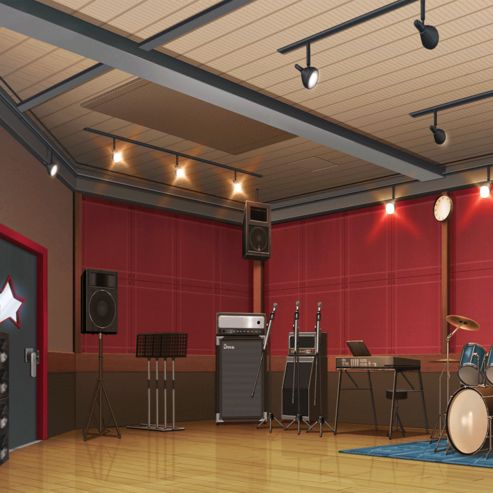
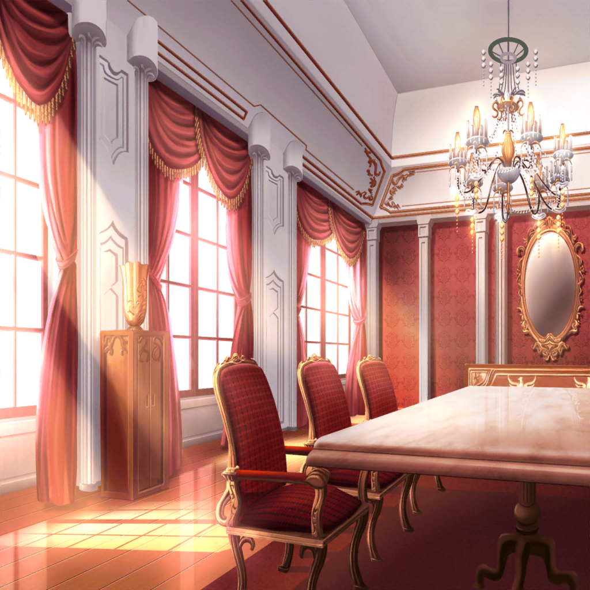
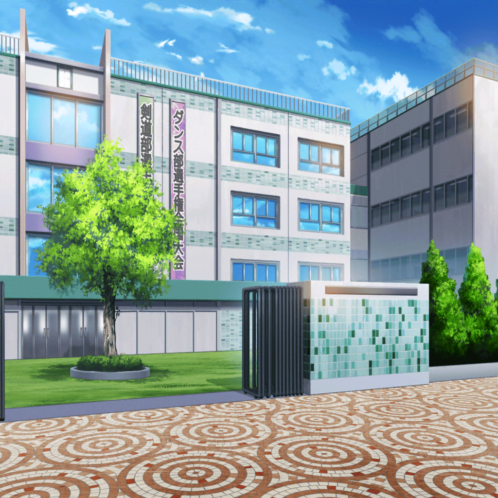

数日後
スタジオ
花音
ハッピー！ ラッキー！ スマイル！ イエーイ！！
こころ
良いわね花音！
だいぶ板についてきたじゃない
ミッシェル
（あれから、公園、商店街、薫さんのファン限定イベント……
結構色々ライブやって……）
ミッシェル
ついにライブハウスからオファー、
来ちゃいましたけど
花音
えっ。美咲ちゃん、それ本当っ！？
こころ
ほら、言ったでしょ？
薫
こころの言うとおりになったね
ミッシェル
まあ、ゲリラライブする度、
あれだけ人だかり作ってたら、噂にもなるよね
花音
お客さんが来ないなら……まずは自分から動く。
こころちゃんって本当すごいね
ミッシェル
本人はそこまで深く考えてるのかな？
ていうか、
なんかそれ認めたら、負けな気が……
こころ
それにしても、はぐみはまたソフトボールかしら？
今日はせっかく初めからミッシェルがいるのに
ミッシェル
あんたはあたしのことなんだと思ってんだ。
クマか。そうかクマだったな……
はぐみ
おつかれ……
あの……ごめんね。
今日も……遅れちゃって……
ミッシェル
ん……？
薫
はぐみ、どうしたのかな。
君にそんな暗い顔は似合わないよ
こころ
スタジオの照明をあげてみたらどう？
はぐみ
あの……あのね
はぐみ
商店街の、ソフトボールチームの子がね。
この前、車の事故で足を怪我しちゃったの
前に少し、こころんにも会ってるんだけど。あかりって子
花音
あの子……
そ、それならすぐに病院に
はぐみ
うんっ、商店街の人たちもね、だから
すぐ救急車よんで、病院で手術ってなったの。
……でも……

はぐみ
あれ。かーちゃんからメッセージ？
どうしたんだろ。珍し……
…………
はぐみ
ごっ、……ごめん、また、遅れちゃって……！
はぁ……はぁ、はぁ。
……はぁ……

はぐみ
う、うん……チームは順調なんだけど、
ちょっと……病院に……
——でも大丈夫っ！ さあ、バンドしよっ
ミッシェル
あ。もしかして、あの時のメッセージ……
いつも遅刻してたのも、その子が関係して……？
はぐみ
うん……
ミッシェル
え。じゃあ……あのあと、
その……間に合わなかったっていうか……
経過があんまり、よく……ないの？
はぐみ
それが、手術は大成功だったの！
お医者さんも、
後遺症も残らないし、全部元通りだよって
ミッシェル
な……なんだ。びっくりさせないでよ。
だったらなんの問題もないじゃん
はぐみ
それがあるのっ。
あかり、はぐみがどんなにお願いしても、
車椅子から降りてくれないの！
花音
手術……子供なら、きっとすごく怖かったよね。
まだ痛むのかも……
ミッシェル
しばらくそっとしておくのも
優しさなんじゃないの？
こころ
…………
はぐみ
それがダメなんだよっ！！
はぐみ
こ、このまま歩かないと……！
足が固まって、
どんどん歩けなくなっちゃうんだって！！
薫・花音・美咲
……！！！！
はぐみ
どうしよう……
はぐみ、どうしたら……
こころ
決まってるじゃないっ
はぐみ
え……？
こころ
はぐみ、それからみんなもっ。
練習はやめよ！
楽器をケースに入れて、今すぐここから出るわよ！
薫
ライブハウスのオファーは、いいのかな？
こころ
ハロー、ハッピーワールド！ は、
世界を笑顔にするバンドなのよ？
こころ
メンバーのはぐみが笑顔じゃないのに
ライブハウスどころじゃないわ！
こころ
すぐにそのあかりって子のところへ行って、
はぐみを笑顔に戻さなきゃ！
薫・はぐみ・花音
こころ（ん）（ちゃん）……
ミッシェル
まあ……
折角決まったライブハウス出演だけど、
そうなるかな
こころ
さあ今すぐ！
病院であかりに突撃ライブよっ！
レッツゴー！ ゴー！ ゴッ……
ミッシェル
って！！
ちょちょちょっと待ったあぁっ！！
こころ
どうしたのミッシェル？
あ、そうね！
ＤＪセットやドラムセットは、運ぶのに人手がいるわね
ミッシェル
じゃなくて！！
ミッシェル
公園や学校はまだしも、
よりによって病院はバンドとかだめでしょ！？
こころ
そうなの？
ミッシェル
そうなのっ！！
こころ
うーん？
あたしがどうしてもやりたいって……
ミッシェル
あーもう！ わかりました！
ちょっとミッシェルが、病院に聞いてみるから！
いきなり行くのはダメ！！ メンバーは全員待機！
薫・はぐみ
了解、ミッシェル！！
こころ
ミッシェルがそう言うなら、仕方ないわね
花音
美咲ちゃん、大丈夫？
わ、私、なにが出来るかわからないけど、
頑張って、手伝うからっ
ミッシェル
ありがとう花音さん。
２人でならちょっと、いける気がしてきた……